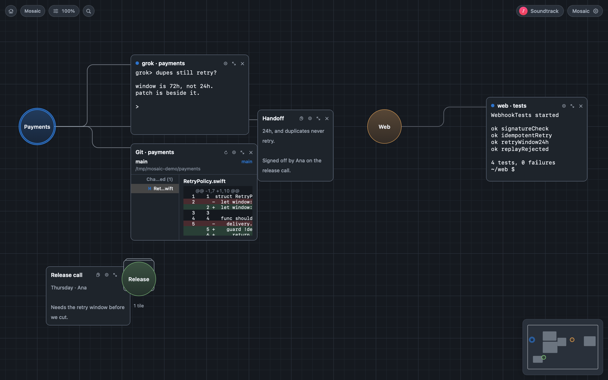
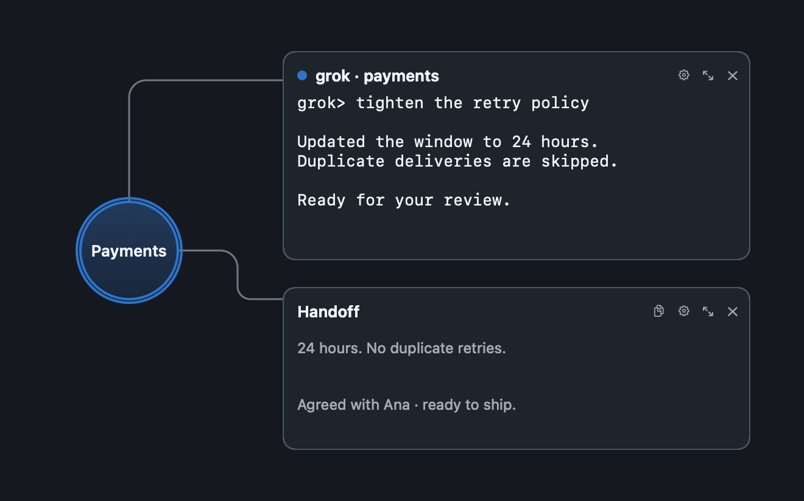
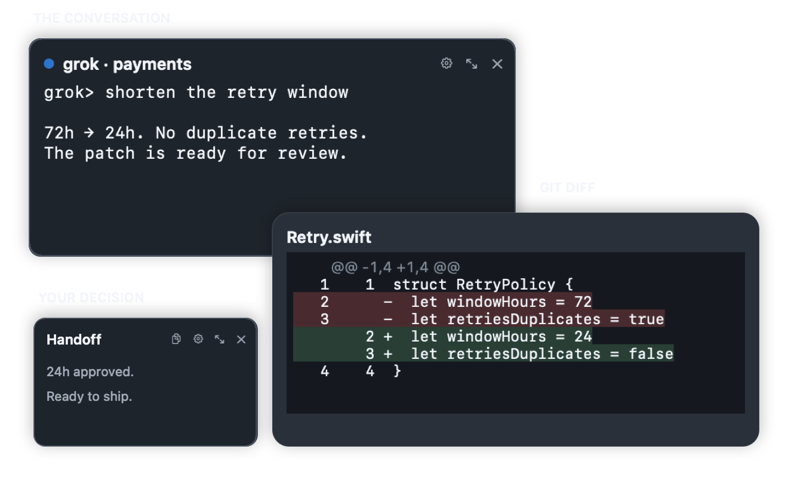
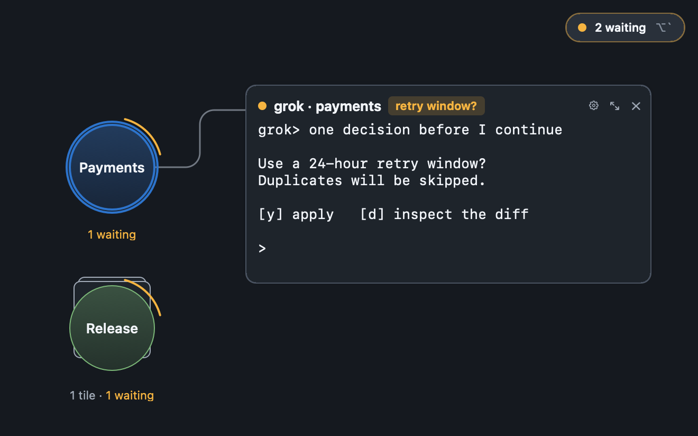
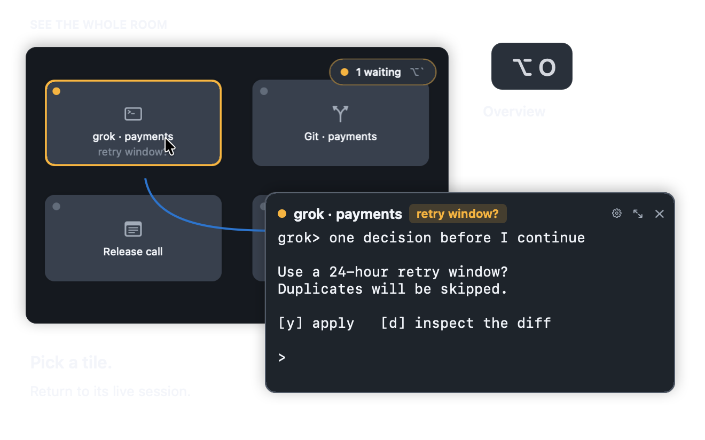

Room · 房间
a whole canvas of its own
一整块自己的画布，通常对应一个项目。切换房间会先把当前这块写回磁盘，再载入另一块。
Several threads. One canvas.
把终端、agent、改动与笔记留在一起。谁在等你，随时看见。
Keep a session, its diff, and its notes connected. The waiting pill counts explicit asks.

A circular hub holds the name. Wires mark membership, not a sequence.
工作区是画布上的圆形 Hub，名称在圆内。成员靠显式归属，不靠矩形位置。暂时不看的线可以折起来——进程还在跑。

You arrange things once, instead of alt-tabbing forever.
每个 tile 都是真实的东西：PTY 终端、agent、笔记、便签、网页、git、文件，甚至别的应用的窗口画面。它们不是标签页，是画布上有位置、有大小、有邻居的对象。
一整块自己的画布，通常对应一个项目。切换房间会先把当前这块写回磁盘，再载入另一块。
圆内是名称，连线标出成员。可以绑定项目目录、上色、Fit 或 Fold。拖进圆是加入；归属不靠矩形框。
最小的单位。⌘ 加数字给常用 tile 一个相机快捷键；双击最大化，Esc 回到画布。
The conversation and the change, side by side.
Agent 做了什么，直接在旁边的 Git diff 里看。讨论留在会话里，决定写进笔记——不用为了找回上下文来回切窗口。

Who is waiting on me, right now.

组织层回答「东西放在哪」，注意力层回答「现在该看哪」。状态只从可靠信号来：进程退出码、前台进程组、终端铃、agent 通过 MCP 自报。还在跑的 REPL 不是 waiting。
Status never touches the database and never enters undo. Restart the app and everything is quiet again — a badge that survives a restart is lying to you.
succeeded 与 failed 会衰减：focus 一下，或者五分钟后，回到安静。
One shortcut. Back in context.
按 ⌥O 看总览。找到需要你的会话，点一下就回到它所在的位置；按住只是偷看，松开回到原处。

Agents edit the canvas you are looking at.
应用自己就是 MCP 服务器，监听一个 Unix socket；agent 通过随附的 stdio shim 接进来。工具刻意做得小、语义化、面向数据：它们传递意图，不传递鼠标事件。
每一次改动都走和你点菜单相同的那条 reducer——立刻出现在屏幕上，⌘Z 一样能撤回。
Mosaic 需要开着；shim 不会替你启动它。
mosaic_overview房间与工作区的树，带实时 tile 计数mosaic_create_tile新建任意种类的 tile，可指定工作区mosaic_focus_tile把用户的相机移到某个 tile 上mosaic_present用一个 tile 填满窗口；工作区 id 则聚焦 Hubmosaic_set_tile_statusagent 自报：等你 / 完成 / 失败mosaic_undo · redo走的是 ⌘Z 那条历史每个终端 tile 是一条真的 PTY。会话跟着 tile 走：换房间、关掉视图都不断线，删掉 tile 才结束。
没有账号，没有同步服务。房间、工作区、笔记都在你自己机器上的一个 SQLite 文件里。
给应用绑一张专辑或歌单。配乐属于应用，不属于房间——换房间不换歌。
不是套壳网页。只在你把 tile 指向某个窗口时才申请录屏权限。
Keep every thread on one canvas.
macOS 15 或更高 · 本地优先，无账号无同步
Requires macOS 15+. No account, no sync.
{kind=link}
{kind=link}
{kind=link}